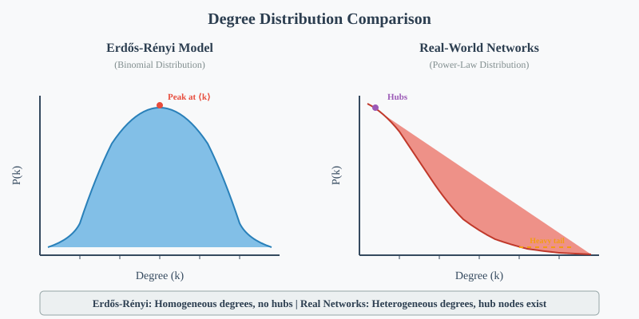
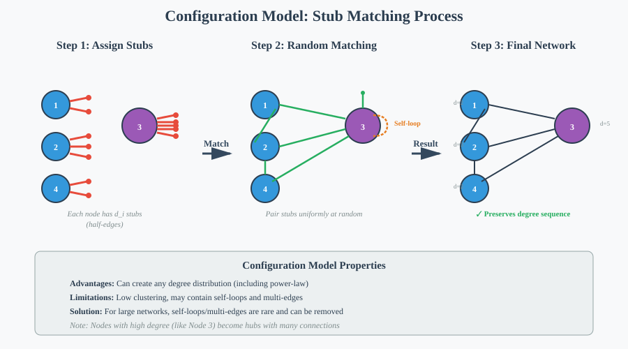
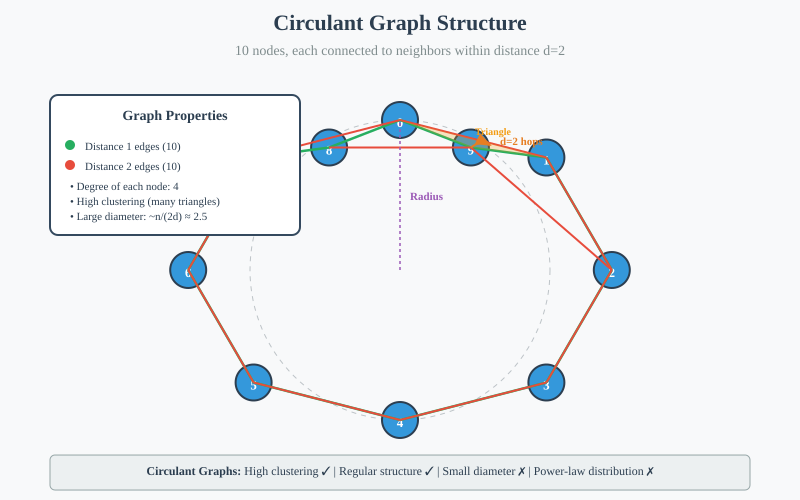
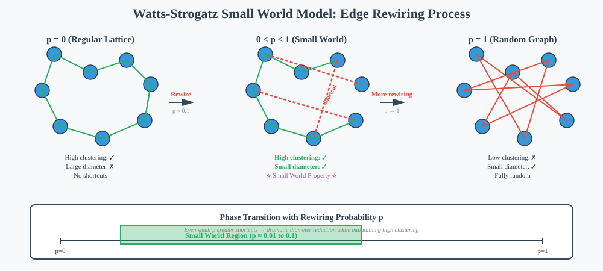
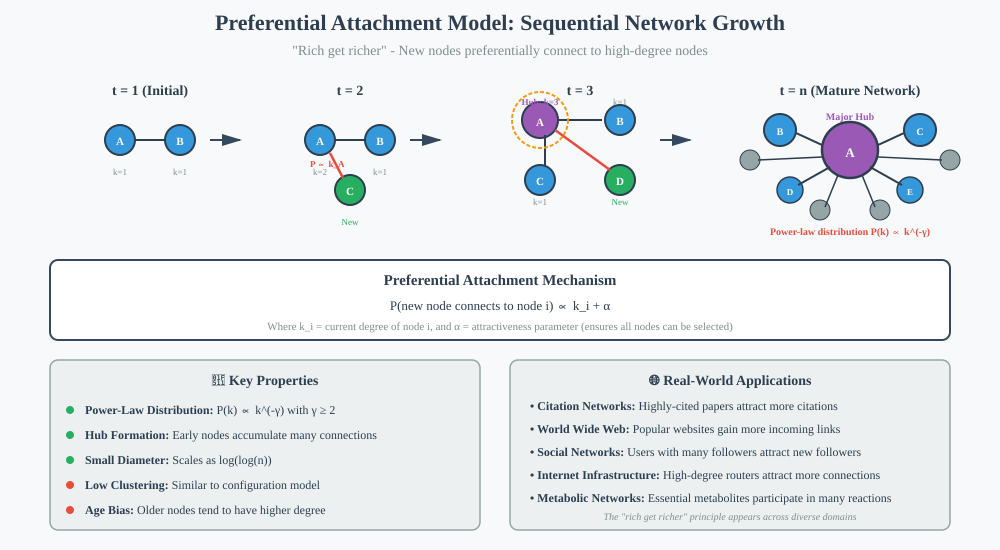

Network Models
📑 Quick Navigation
- Introduction
- Random Graph Models
- Erdos-Renyi Model
- Configuration Model
- Small World Models
- Preferential Attachment Model
- Model Comparison
- References & Further Reading
Introduction
Network models provide mathematical frameworks for understanding how real-world networks form and evolve. By studying these models, we gain insights into whether observed network structures could arise from specific formation processes.
Key Motivations:
- Understanding Network Formation: How did networks like Facebook or the internet grow from small beginnings to their current size?
- Predicting Network Properties: Models help us predict large-scale structural features without analyzing each network individually
- Studying Network Processes: Understanding disease spread, information diffusion, and other dynamic processes on networks
- Comparing Real Networks: Identifying unexpected features by comparing observed networks to theoretical models
Network Growth Mechanisms:
- Social Networks: People gradually join and form connections based on friendships
- Road Networks: Infrastructure develops through planned expansion and geographic constraints
- Citation Networks: Papers cite existing literature, creating directed knowledge graphs
- Biological Networks: Protein interactions evolve through evolutionary processes
Each network type has unique formation mechanisms, leading to different large-scale structures. Network models capture these essential formation processes mathematically.
Random Graph Models
Random graph models introduce randomness while maintaining certain specified parameters. These models serve as null hypotheses for comparing against real-world networks.
Core Characteristics:
- Fixed Parameters: Number of nodes, edge probability, or degree sequence
- Random Edge Placement: Edges appear according to probabilistic rules
- Mathematical Tractability: Many properties can be computed analytically
- Baseline Comparisons: Help identify non-random features in real networks
Simple Random Graph Model:
- Fixed Elements: Both the number of nodes (n) and number of edges (m) are predetermined
- Edge Placement: Edges are placed uniformly at random among all possible node pairs
- Graph Space: Creates simple undirected graphs without self-loops or multi-edges
- Limitation: Difficult to analyze mathematically due to edge count constraints
This foundational model demonstrates the concept of random network generation, though more sophisticated models are typically used in practice.
Erdos-Renyi Model
The Erdos-Renyi model, developed by mathematicians Paul Erdős and Alfréd Rényi, is one of the most well-studied random graph models. Instead of fixing the exact number of edges, it fixes the probability of each edge appearing.
Model Definition:
G(n, p) where:
- n = number of nodes
- p = probability of edge between any pair of nodes
Key Parameters:
- n: Total number of nodes in the network
- p: Edge probability (0 ≤ p ≤ 1)
- Expected Edges: E[m] = p × n(n-1)/2
- Actual Edges: Varies around expected value following binomial distribution
Degree Distribution:
The degree distribution follows a binomial distribution. For a node with degree k:
P(degree = k) = C(n-1, k) × p^k × (1-p)^(n-1-k)
Where:
- C(n-1, k) = number of ways to choose k neighbors from n-1 possible nodes
- p^k = probability of k edges existing
- (1-p)^(n-1-k) = probability of remaining edges not existing
Example Calculation:
For a node of degree 10 in a graph with n=100 nodes and p=0.1:
P(degree = 10) = C(99, 10) × (0.1)^10 × (0.9)^89
Mathematical Properties:
- Average Clustering Coefficient: Very small, approximately p
- Diameter: Relatively small, scales as log(n)/log(pn)
- Degree Distribution: Bell-shaped (binomial), not power-law
- Local Structure: Tree-like neighborhoods with few triangles

Strengths and Limitations:
Strengths:
- Mathematical Tractability: Properties can be computed analytically
- Well-Understood: Extensive theoretical results available
- Baseline Model: Useful for detecting non-random features
- Phase Transitions: Exhibits interesting connectivity phase transitions as p varies
Limitations:
- Unrealistic Degree Distribution: Does not match power-law distributions seen in real networks
- Low Clustering: Real social networks have much higher clustering coefficients
- Independent Edges: Edge presence is uncorrelated, unlike real networks where edges are correlated
- No Growth Mechanism: Does not model how networks evolve over time
Despite these limitations, the Erdos-Renyi model remains fundamental for understanding random network properties and serves as a benchmark for more realistic models.
Configuration Model
The configuration model generates random graphs with a specified degree sequence, allowing researchers to create networks with power-law or other desired degree distributions while maintaining randomness in edge placement.
Model Motivation:
Since many real-world networks exhibit power-law degree distributions, we need models that can reproduce these distributions while keeping other aspects random.
Model Definition:
Instead of fixing just the number of nodes and edges, the configuration model fixes the exact degree of each individual node.
Construction Algorithm:
- Assign Degrees: Each node i receives a predetermined degree d_i
- Create Stubs: Attach d_i "half-edges" (stubs) to each node i
- Random Matching: Uniformly randomly pair up all stubs to create edges
- Result: A graph where each node has exactly its specified degree

Mathematical Formulation:
For a network with n nodes and degree sequence (d₁, d₂, ..., d_n):
Total stubs = Σd_i (must be even)
Number of possible matchings = (Σd_i - 1)!!
Example:
Consider a friendship network with 10 individuals having degrees: [2, 3, 4, 2, 5, 1, 3, 2, 4, 2]
- Node 1: Has 2 stubs
- Node 5: Has 5 stubs (high-degree hub)
- Total stubs: 28 (even, as required)
- Random pairing: Creates edges uniformly at random
Key Properties:
Advantages:
- Flexible Degree Distribution: Can implement any desired degree sequence including power-law
- Preserves Degree Sequence: Exact control over node degrees
- Analytical Tractability: Many properties can still be computed
- Realistic Distributions: Can match observed degree patterns from real networks
Potential Issues:
- Self-Loops: A node's stubs might be paired together
- Multi-Edges: Two stubs from the same node pair might connect to the same neighbor
- Clustering Coefficient: Remains very small for large networks (O(1/n))
- Tree-Like Structure: Local neighborhoods resemble trees, lacking triangles
Handling Self-Loops and Multi-Edges:
Option 1: Removal
- Remove all self-loops and multi-edges after construction
- Results in slightly altered degree sequence
- For large networks, proportion of problematic edges is vanishingly small
Option 2: Rejection Sampling
- Reject configurations with self-loops or multi-edges
- Keep regenerating until obtaining a simple graph
- Computationally expensive for dense graphs
Option 3: Accept Them
- Keep self-loops and multi-edges if they're realistic for the application
- Appropriate for neural networks, road networks, or communication systems
Clustering Coefficient Analysis:
For large networks sampled from the configuration model:
C ≈ <k²>² / n<k>³
Where:
- C = clustering coefficient
= average degree - n = number of nodes
As n → ∞, clustering coefficient → 0, making the model unrealistic for social networks with high clustering.
Applications:
- Network Null Models: Testing whether observed features are significant
- Disease Spreading: Studying epidemic models on networks with realistic degree distributions
- Robustness Analysis: Understanding network resilience to node removal
- Theoretical Studies: Analyzing processes on networks with controlled degree sequences
Small World Models
Small world models address a key limitation of previous models: they generate networks with both high clustering coefficients and small diameters, properties commonly observed in real-world networks.
The Small World Property:
- High Clustering: Nodes form tightly-knit local communities
- Short Path Lengths: Despite local clustering, any two nodes are connected by short paths
- Real Examples: Social networks, neural networks, power grids
Circulant Graphs:
Circulant graphs provide the foundation for small world models by creating highly structured networks with strong local clustering.
Construction:
- Arrange Nodes: Place n nodes uniformly around a circle
- Local Connections: Connect each node to all neighbors within distance d along the circle
- Result: Regular graph with high clustering but large diameter

Example:
For a 10-node circulant graph with d=2:
- Each node connects to 2 neighbors clockwise and 2 neighbors counter-clockwise
- Results in degree = 4 for all nodes
- Creates many triangles (high clustering)
- Diameter ≈ n/(2d) = 10/4 = 2.5 (relatively large)
Properties of Circulant Graphs:
Advantages:
- High Clustering Coefficient: Many closed triangles in local neighborhoods
- Regular Structure: All nodes have identical degree
- Predictable: Deterministic construction with known properties
Disadvantages:
- Large Diameter: Path lengths scale linearly with network size
- No Power-Law Distribution: All nodes have exactly the same degree
- Too Regular: Lacks randomness of real networks
- No Small-World Property: Missing the "small world" aspect
Watts-Strogatz Small World Model:
The Watts-Strogatz model creates small world networks by introducing randomness into circulant graphs through edge rewiring.
Construction Algorithm:
- Start: Begin with a circulant graph (n nodes, each connected to d nearest neighbors)
- Rewiring: With probability p, rewire each edge to a random node
- Shortcuts: Rewired edges create long-range "shortcuts" across the network
- Result: Network with both high clustering and small diameter

Rewiring Parameter p:
- p = 0: Pure circulant graph (high clustering, large diameter)
- 0 < p < 1: Small world regime (high clustering, small diameter)
- p = 1: Random graph (low clustering, small diameter)
Mathematical Properties:
Clustering Coefficient:
C(p) ≈ C(0) × (1 - p)³
Remains high even for small p values.
Average Path Length:
L(p) ≈ n/(2d) for p=0
L(p) ≈ log(n)/log(d) for p→1
Drops rapidly even for small p values.
Critical Insight:
Even rewiring a small fraction of edges (p ≈ 0.01 to 0.1) dramatically reduces diameter while maintaining high clustering. This explains why small world properties are so common in real networks - even a few random connections create shortcuts.
Phase Transition:
- Low p: Clustering high, paths long (ordered phase)
- Intermediate p: Clustering high, paths short (small world phase) ⭐
- High p: Clustering low, paths short (random phase)
Real-World Implications:
Social Networks:
- Most friendships are local (high clustering)
- Occasional long-distance connections (shortcuts)
- Creates "six degrees of separation"
Neural Networks:
- Neurons primarily connect locally
- Some long-range connections enable rapid signal transmission
- Efficient information processing
Power Grids:
- Local clustering for reliability
- Long-distance transmission lines for efficiency
- Robust yet efficient design
Limitations:
- Degree Distribution: Still not power-law (approximately Poisson for moderate p)
- Dynamic Growth: Does not model how networks grow over time
- Edge Formation: Rewiring process not always realistic
Despite limitations, the Watts-Strogatz model provides crucial insights into why small world properties emerge so naturally in diverse real-world networks.
Preferential Attachment Model
The preferential attachment model, also known as the Barabási-Albert model, explains how power-law degree distributions arise through a "rich get richer" growth mechanism.
Historical Context:
In the 1960s, researcher Derek J. de Solla Price studied citation networks and discovered that highly-cited papers tend to accumulate citations at a faster rate than less-cited papers.
Citation Network Structure:
- Nodes: Scientific papers
- Directed Edges: Paper A cites Paper B (directed from A to B)
- Observation: Citation counts follow a power-law distribution
- Mechanism: Popular papers attract more attention and citations

The Preferential Attachment Mechanism:
Core Principle:
The probability that a new node connects to an existing node is proportional to that existing node's current degree.
Mathematical Formulation:
For a new node joining the network:
P(connect to node i) ∝ k_i + α
Where:
- k_i = current degree of node i
- α = attractiveness parameter (ensures all nodes have non-zero connection probability)
Sequential Growth Algorithm:
- Initialize: Start with m₀ initial nodes
- Add Node: At each time step, add one new node
- Create Edges: New node creates m edges to existing nodes
- Preferential Selection: Select existing nodes with probability proportional to their degree
- Repeat: Continue until desired network size reached
Example:
For a citation network:
- New paper: Enters the network
- Citation probability: Proportional to existing citation counts
- Popular papers: High citation count → higher probability of being cited again
- New papers: Base probability α ensures they can still be cited
Resulting Degree Distribution:
The preferential attachment mechanism produces a power-law degree distribution:
P(k) ∝ k^(-γ)
Where:
- γ = power-law exponent
- Typically γ ≥ 2 for preferential attachment models
- Matches observed exponents in many real networks
Mathematical Analysis:
For the basic Barabási-Albert model (α = 1), the degree distribution follows:
P(k) = 2m(m+1) / [k(k+1)(k+2)]
Which asymptotically behaves as:
P(k) ~ k^(-3) for large k
Key Properties:
Degree Distribution:
- Power-Law: P(k) ∝ k^(-γ) with γ typically between 2 and 3
- Scale-Free: No characteristic scale for node degrees
- Heavy Tail: Small number of highly connected hubs
Network Structure:
- Hubs: A few nodes with very high degree
- Small Diameter: Typically scales as log(log(n))
- Low Clustering: Similar to configuration model, clustering is low
- Degree Correlations: Early nodes tend to have higher degree (age bias)
Temporal Evolution:
Early Nodes:
- Join when network is small
- Accumulate connections over time
- Tend to become hubs
Late Nodes:
- Join established network
- Harder to accumulate many connections
- Typically remain low-degree
Applications and Real-World Examples:
World Wide Web:
- Nodes: Web pages
- Edges: Hyperlinks
- Mechanism: Popular pages attract more links
- Result: Power-law in-degree distribution
Internet:
- Nodes: Routers/autonomous systems
- Edges: Physical connections
- Mechanism: High-degree nodes are more visible and attractive
- Result: Power-law degree distribution with γ ≈ 2.2
Metabolic Networks:
- Nodes: Metabolites
- Edges: Biochemical reactions
- Mechanism: Essential metabolites participate in many reactions
- Result: Power-law degree distribution
Social Networks:
- Nodes: Individuals
- Edges: Friendships/followers
- Mechanism: Popular users attract more connections
- Result: Power-law or power-law-like distribution
Model Extensions:
Fitness Model:
Nodes have intrinsic "fitness" values affecting connection probability:
P(connect to i) ∝ η_i × k_i
Where η_i is node i's fitness.
Accelerated Growth:
Add multiple nodes per time step or vary edges per node:
P(connect to i) ∝ k_i^α
Where α > 1 creates super-linear preference (stronger rich-get-richer).
Edge Removal:
Model dynamic networks where edges can be removed:
- Helps prevent extreme hub formation
- More realistic for evolving social networks
Non-Linear Preference:
P(connect to i) ∝ k_i^α
- α < 1: Sub-linear preference (weak rich-get-richer)
- α = 1: Linear preference (standard model)
- α > 1: Super-linear preference (strong rich-get-richer)
Limitations:
Clustering:
- Preferential attachment produces low clustering coefficients
- Real social networks have much higher clustering
- Solution: Combine with small-world mechanisms
Degree Correlations:
- Model doesn't capture degree assortativity/disassortativity
- Real networks often show correlations between connected node degrees
- Extension: Introduce degree-dependent connection rules
Static Properties:
- Focuses only on degree distribution
- Doesn't capture community structure
- Doesn't model edge dynamics (rewiring, deletion)
Why Preferential Attachment Matters:
The preferential attachment model provides a plausible, intuitive mechanism explaining why power-law degree distributions appear so frequently across diverse domains. The "rich get richer" principle is observable in:
- Economics: Wealth accumulation
- Science: Citation accumulation
- Technology: Network infrastructure growth
- Biology: Evolutionary network development
This universality makes preferential attachment one of the most important network formation mechanisms.
Model Comparison
Each network model captures different aspects of real-world networks. Understanding their strengths and limitations helps in selecting appropriate models for specific applications.
| Model | Degree Distribution | Clustering | Diameter | Best For | Limitations |
|---|---|---|---|---|---|
| Erdos-Renyi | Binomial (bell-shaped) | Very Low | Small | Mathematical analysis, null models | Unrealistic for most real networks |
| Configuration Model | Arbitrary (can be power-law) | Very Low | Small | Testing degree sequence effects | Low clustering, can have self-loops |
| Small World (Watts-Strogatz) | Approximately Poisson | High | Small | Social networks, neural networks | Not power-law, no growth mechanism |
| Preferential Attachment | Power-law | Low | Very Small | Web graphs, citation networks, scale-free networks | Low clustering, strong age bias |
Model Selection Guidelines:
Use Erdos-Renyi When:
- Need simple baseline model
- Testing for non-random structure
- Mathematical tractability is priority
- Actual network has homogeneous degree distribution
Use Configuration Model When:
- Need to preserve specific degree sequence
- Testing effects of degree distribution alone
- Working with networks where clustering is not critical
- Creating null models for degree-controlled comparisons
Use Small World Models When:
- High clustering is important
- Local structure matters (communities)
- Network has regular local structure
- Modeling networks with geographic or social constraints
Use Preferential Attachment When:
- Network exhibits power-law degree distribution
- Growth mechanism is relevant
- Hub structure is important
- Modeling evolving networks
Hybrid Approaches:
Many realistic network models combine multiple mechanisms:
Preferential Attachment + Clustering:
- Add edges between neighbors of newly connected nodes
- Creates triangles while maintaining power-law distribution
- Better matches real social networks
Small World + Power-Law:
- Start with power-law degree sequence (configuration model)
- Introduce local structure through rewiring
- Captures both clustering and heavy-tailed degrees
Spatial Networks:
- Add geographic constraints to connection probabilities
- Models road networks, power grids, neural networks
- Combines distance effects with growth mechanisms
Practical Considerations:
Computational Complexity:
- Erdos-Renyi: O(n²) for edge generation
- Configuration Model: O(m) for stub matching
- Small World: O(nd) for initial lattice + O(pnd) for rewiring
- Preferential Attachment: O(m × n) for sequential growth
Parameter Estimation:
Each model requires estimating parameters from observed networks:
- Erdos-Renyi: Estimate p from edge density
- Configuration Model: Use observed degree sequence
- Small World: Estimate d (local connections) and p (rewiring probability)
- Preferential Attachment: Estimate m (edges per new node) and α (attractiveness)
Model Validation:
Compare synthetic networks to real networks using:
- Degree distribution (histogram, power-law fit)
- Clustering coefficient
- Average path length
- Degree correlations
- Community structure
- Motif counts
🔗 Code Implementation & Resources
Google Colab Notebooks

Implementation Examples:
- Erdos-Renyi Model: Generate and analyze random graphs
- Configuration Model: Create networks with specified degree sequences
- Small World Models: Implement Watts-Strogatz rewiring algorithm
- Preferential Attachment: Simulate network growth with rich-get-richer dynamics
🤗 Hugging Face Resources
Network Analysis Libraries:
- NetworkX - Comprehensive Python library for network science
- Graph-tool - Efficient C++ library with Python interface
- igraph - Fast network analysis in R, Python, and C
📚 ArXiv Papers
Foundational Papers:
- Erdos-Renyi: On Random Graphs - Original theory
- Small World: Collective dynamics of 'small-world' networks - Watts & Strogatz (1998)
- Scale-Free Networks: Emergence of Scaling in Random Networks - Barabási & Albert (1999)
- Configuration Model: Random graphs with arbitrary degree distributions - Newman et al. (2001)
Recent Advances:
- Network Science - Comprehensive review by Barabási
- Complex Networks: Structure and Dynamics - Boccaletti et al.
References & Further Reading
📖 Classic Papers
-
Erdős, P., & Rényi, A. (1960)
On the evolution of random graphs
Publication of the Mathematical Institute of the Hungarian Academy of Sciences -
Watts, D. J., & Strogatz, S. H. (1998)
Collective dynamics of 'small-world' networks
Nature, 393(6684), 440-442 -
Barabási, A. L., & Albert, R. (1999)
Emergence of scaling in random networks
Science, 286(5439), 509-512 -
Newman, M. E., Strogatz, S. H., & Watts, D. J. (2001)
Random graphs with arbitrary degree distributions and their applications
Physical Review E, 64(2), 026118
📚 Textbooks
-
Newman, M. (2018)
Networks: An Introduction
Oxford University Press - Comprehensive textbook covering all major network models -
Barabási, A. L. (2016)
Network Science
Cambridge University Press - Free online book at networksciencebook.com -
Easley, D., & Kleinberg, J. (2010)
Networks, Crowds, and Markets
Cambridge University Press - Interdisciplinary perspective on networks -
Kolaczyk, E. D., & Csárdi, G. (2014)
Statistical Analysis of Network Data with R
Springer - Practical guide to network analysis
🔬 Advanced Topics
-
Price, D. D. S. (1976)
A general theory of bibliometric and other cumulative advantage processes
Journal of the American Society for Information Science, 27(5), 292-306 -
Bollobás, B., & Riordan, O. (2004)
The diameter of a scale-free random graph
Combinatorica, 24(1), 5-34
🌐 Online Resources
-
Stanford Network Analysis Project (SNAP)
http://snap.stanford.edu/ - Network datasets and analysis tools -
Network Science by Albert-László Barabási
http://networksciencebook.com/ - Free online textbook with interactive visualizations
Document Information:
- Created for: MkDocs Material Theme
- Target Audience: AI researchers, data scientists, network analysts
- Prerequisites: Basic graph theory, probability, Python programming
- Estimated Reading Time: 45-60 minutes
- Last Updated: 2025